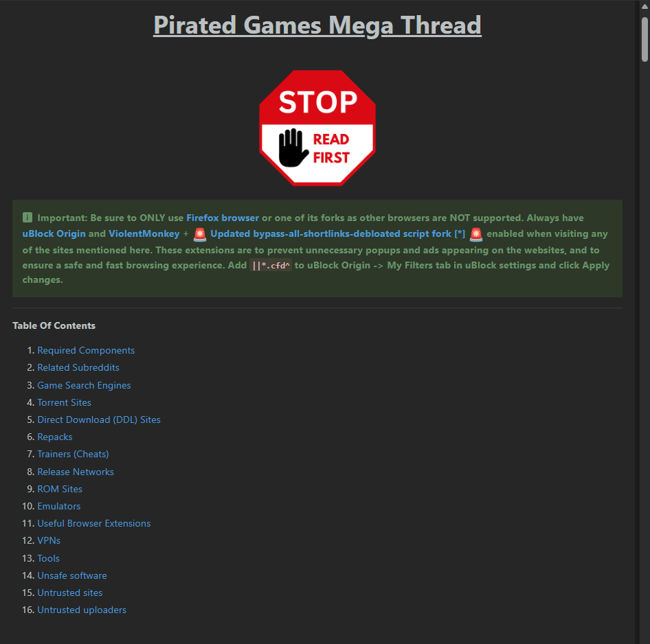
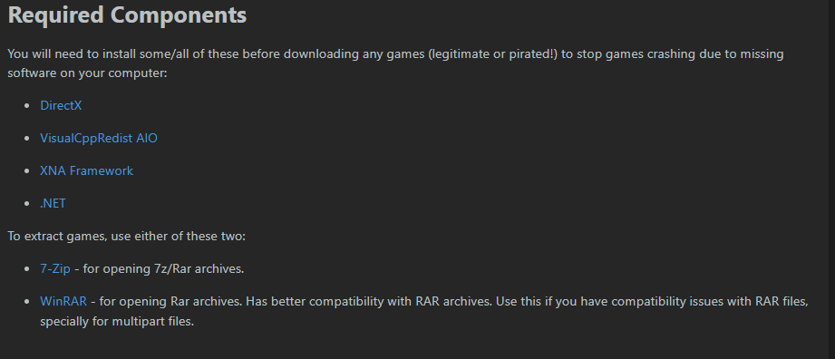
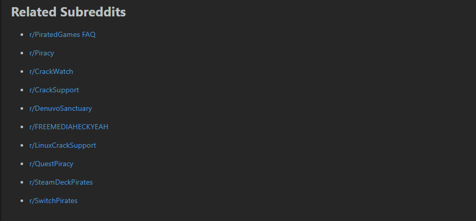
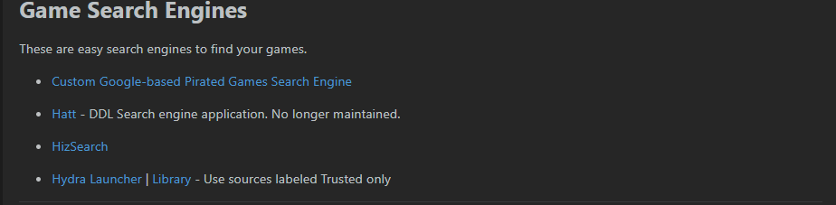
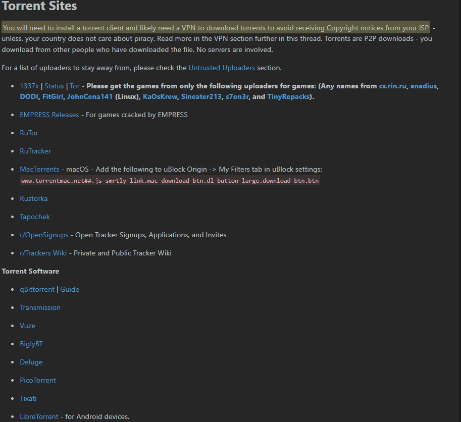
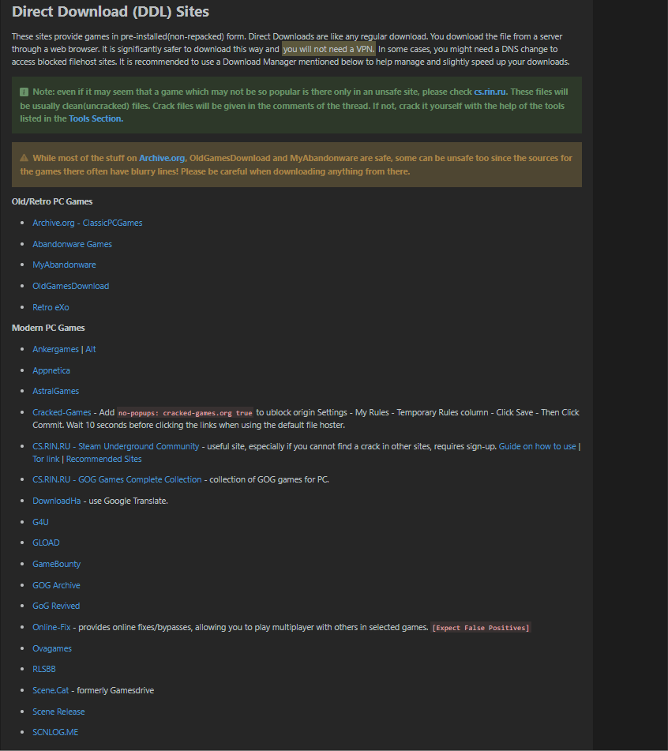
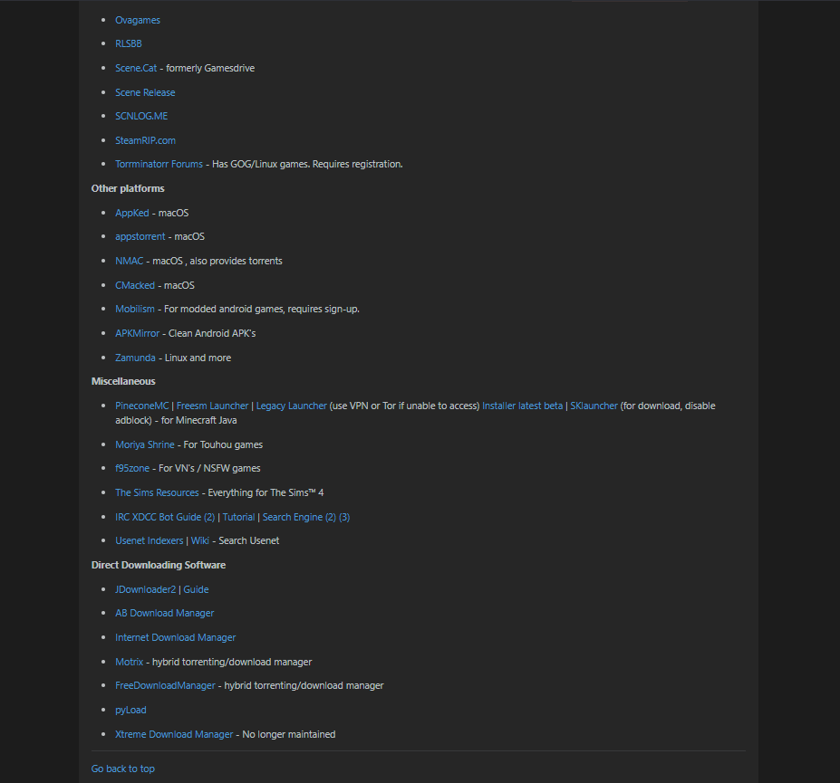
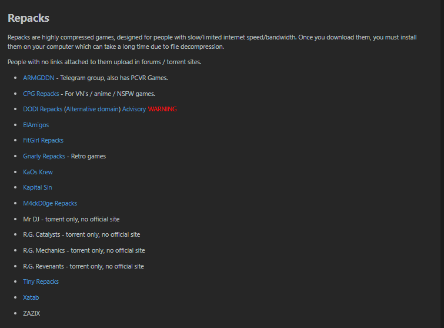
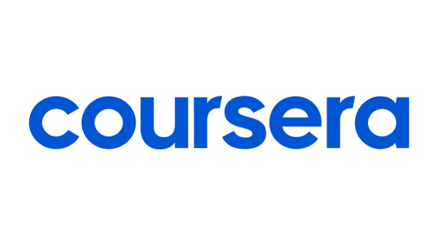

1. Primera sección del sitio
Al ingresar al sitio encontrarás la primer sección de esta página, la cual es la tabla de contenidos, donde podrás dirigirte a cualquier sección deseada.

Explora nuestra colección de videojuegos para PC, sin costo y sin complicaciones.
Ver JuegosEste manual te enseñará a como descargar juegos "gratis" en el megahilo. Solo se abordará la sección de juegos, por lo que se dejará de lado la sección de herramientas externas y links no relacionados directamente con la descarga de juegos.
Al ingresar al sitio encontrarás la primer sección de esta página, la cual es la tabla de contenidos, donde podrás dirigirte a cualquier sección deseada.

Son los componentes que deberás instalar antes de descargar cualquier juego (legítimo o "gratis"), si es que tu computadora los requiere.

Algunos subreddits relacionados con la página.

Algunos motores de búsqueda sencillos para encontrar tus juegos.

Sitios donde podrás descargar archivos torrent para descargar tus juegos. Deberás de tener el cliente de torrent instalado previamente para poder utilizar estos archivos.

En este apartado encontrarás juegos pre-instalados, los cuales se dividen entre juegos retro y juegos modernos.


Los repacks son juegos altamente comprimidos, esto con el fin de que los usuarios con un internet más lento o limitado puedan descargar juegos pesados de una manera más eficiente.

Esta página se generó con los conocimientos que los cursos de Coursera ofrecen gratis para la comunidad UNAM, gracias a los conocimientos que la carrera de ICO nos da, y gracias al conocimiento y retroalimentación de cada integrante del equipo.

Ir a Coursera